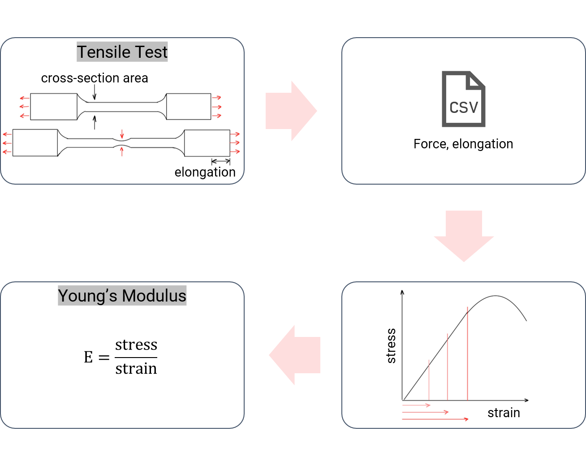

Achieving reproducible and reusable workflows #
We will use pyiron_workflow, a framework for constructing workflows as computational graphs from simple python functions, to create a simple workflow for data analysis. Converting your script to a workflow you can use a number of powerful features that pyiron provides, such as data management, job management, at the same time ensuring that they are fully reproducible.
In this example, we will use a very common use case in Materials Science, which is to use data from a tensile test to calculate the Young’s modulus.
We start from a datafile in csv format. The file containes data from a tensile test of typical S355 (material number: 1.0577) structural steel (designation of steel according to DIN EN 10025-2:2019). The data were generated in the Bundesanstalt für Materialforschung und -prüfung (BAM) in the framework of the digitization project Innovationplatform MaterialDigital (PMD) which, amongst other activities, aims to store data in a semantically and machine understandable way.
References#
Schilling, M., Glaubitz, S., Matzak, K., Rehmer, B., & Skrotzki, B. (2022). Full dataset of several mechanical tests on an S355 steel sheet as reference data for digital representations (1.0.0) Data set
Let’s start with the visualisation of how such a workflow would look like:

In the tensile test experiment, the force (load) and elongation values are recorded, and saved in a csv file which forms the dataset. We would like to read in this dataset, and convert the load and elongation to stress and strain. Then we plot the results, and calculate a the Young’s modulus, which is the slope of the linear, elastic part of the stress-strain curve. Your calculation could depend on the value of this strain-cutoff that is used, which is something we will explore.
Note
Note that the stress and strain used in this notebook are actually engineering stress and strainTo create such a workflow, we start by defining some functions which does each of this step. We will use ‘pyiron_workflow’ to compose them into a workflow, which can then be easily visualised and executed.
Before we move on to the actual workflow, a crash course on Jupyter notebooks.
%config IPCompleter.evaluation='unsafe'
import matplotlib.pyplot as plt
import numpy as np
import pandas as pd
from pyiron_base import Project
from pyiron_workflow import Workflow, job
Reading in the experimental results #
This function reads in the csv file, and in addition, the cross sectional area. The load is converted to stress in MPa, and the stress and strain values are returned.
@Workflow.wrap_as.function_node()
def ReadInput(filename, area):
"""
Read in csv file, convert load to stress
"""
kN_to_N = 0.001 # convert kiloNewton to Newton
mm2_to_m2 = 1e-6 # convert square millimeters to square meters
df = pd.read_csv(filename, delimiter=";", header=[0, 1], decimal=",")
df["Stress"] = df["Load"] * kN_to_N / (area * mm2_to_m2)
#although it says extensometer elongation, the values are in percent!
strain = df["Extensometer elongation"].values.flatten()
#subtract the offset from the dataset
strain = strain - strain[0]
stress = df["Stress"].values.flatten()
return stress, strain
Calculate Young’s modulus #
The stress and strain values, which are outputs of the previous function is used for a linear fit in this function, and the slope is calculated. The slope is the Young’s modulus. The calculated value of Young’s modulus will depend on the strain_cutoff parameter.
@Workflow.wrap_as.function_node()
def CalculateYoungsModulus(stress, strain, strain_cutoff=0.2):
percent_to_fraction = 100 # convert
MPa_to_GPa = 1 / 1000 # convert MPa to GPa
arg = np.argsort(np.abs(np.array(strain) - strain_cutoff))[0]
fit = np.polyfit(strain[:arg], stress[:arg], 1)
youngs_modulus = fit[0] * percent_to_fraction * MPa_to_GPa
return youngs_modulus
Plotting the results #
This function plots the stress and strain.
@Workflow.wrap_as.function_node()
def Plot(stress, strain, format="-"):
plt.plot(strain, stress, format)
plt.xlabel("Strain [%]")
plt.ylabel("Stress [MPa]")
return 1
Creating a workflow #
Now we can combine all the functions together to compose a workflow. Each function corresponds to a step in the workflow and their inputs and outputs are linked.
wf = Workflow("youngs_modulus")
wf.strain_cutoff = Workflow.create.standard.UserInput(float)
wf.read_input = ReadInput()
wf.youngs_modulus = CalculateYoungsModulus(
stress=wf.read_input.outputs.stress,
strain=wf.read_input.outputs.strain,
)
wf.plot = Plot(
stress=wf.read_input.outputs.stress,
strain=wf.read_input.outputs.strain,
)
Now we execute the workflow
wf(
read_input__filename="dataset_1.csv",
read_input__area=120.636,
plot__format="-x",
)
We can also visualise the workflow. The visualisation shows the different steps, and their inputs and outputs and how they are linked together.
wf.draw(size=(12, 15))
Making a reusable workflow #
Now that we have a workflow, we can convert it to a Macro, which is a resuable instance. Macros provide three advantages:
Reusability: the macro can be used with different input parameters
Composable: the macro can be integrated into other workflows as a step
Shareable: it can be shared with others, who can in turn run it
The macro looks very much like the workflow we composed before.
@Workflow.wrap_as.macro_node("youngs_modulus", "strain_cutoff")
def YoungsModulus(wf, filename, area, strain_cutoff):
wf.read_input = ReadInput(filename, area)
wf.youngs_modulus = CalculateYoungsModulus(
stress=wf.read_input.outputs.stress,
strain=wf.read_input.outputs.strain,
strain_cutoff=strain_cutoff,
)
return wf.youngs_modulus.outputs.youngs_modulus, strain_cutoff
modulus = YoungsModulus(
filename="dataset_1.csv", area=120.636
)
Let’s see how we can run the macro:
modulus(strain_cutoff=0.2)
Scaling up calculations #
Although this example is easy and fast to run, it represents a common type of problem. For example, we would like to understand the impact of the parameter strain_cutoff on the calculated Young’s modulus. Often, the calculations are computationally intensive, and would need to be parallelised. For this, we can use pyiron Project. A Project is a collection of Jobs which can be easily scaled. The macro that we composed can be easily converted to a Job.
pr = Project("stress-strain-project")
job = pr.create.job.NodeJob("youngs_modulus")
job.input["node"] = modulus
Now we can simply call the run function to execute the job
job.run()
The output can be accessed as follows:
job.output.youngs_modulus
Now we will vary the strain_cutoff to find an optimal value. There are many methods to do this and usually the result depends on the method. Here, we will simply choose a range of strain cutoff values, and run our Job at each of them. We will choose 30 values from the range 0.03 to 0.3.
for x in np.linspace(0.03, 0.3, 30):
job = pr.create.job.NodeJob(f"job_{np.round(x, 4)}")
job.input["node"] = YoungsModulus(
filename="dataset_1.csv",
area=120.636,
strain_cutoff=x,
)
job.run()
The pyiron job table #
pyiron offers a feature to check your jobs at a glance
pr.job_table()
You can see that all the jobs we ran are indexed there along with the associated metadata. This is a powertool tool with which we can do further analysis. We will collect the value of Young’s modulus and strain cutoff and plot them.
First we create a pyiron table
table = pr.create.table(delete_existing_job=True)
Now we need to add some conditions to add data to the table. We create two functions that will extract the Young’s modulus and strain cutoff:
def youngs_modulus(job):
return job["storage/output"]["youngs_modulus"]
def strain_cutoff(job):
return job["storage/output"]["strain_cutoff"]
We can apply them on the table:
table.add["youngs_modulus"] = youngs_modulus
table.add["strain_cutoff"] = strain_cutoff
table.run()
and we extract the results:
df = table.get_dataframe().sort_values(by="strain_cutoff")
df
Finally we can plot it and see how the value of Young’s modulus changes with the selected strain cutoff.
B_experiment = 194
plt.plot(
df.strain_cutoff,
df.youngs_modulus,
"o-",
color="#e57373",
markeredgecolor="#455a64",
)
plt.axhline(B_experiment, color="black", ls="dashed")
plt.xlabel("Strain cutoff [%]")
plt.ylabel("Young's modulus [MPa]");
The experimental value (194 MPa) is marked in black dashed line. As you can see, a very low range gives the wrong results. At a high value of strain cutoff, the non-elastic region is also included in the calculation, which then leads to wrong results.
Note
As we have seen, the ranges of stress and strain have to chosen carefully. In practice, this is done by calculating RP0,2 yield stress